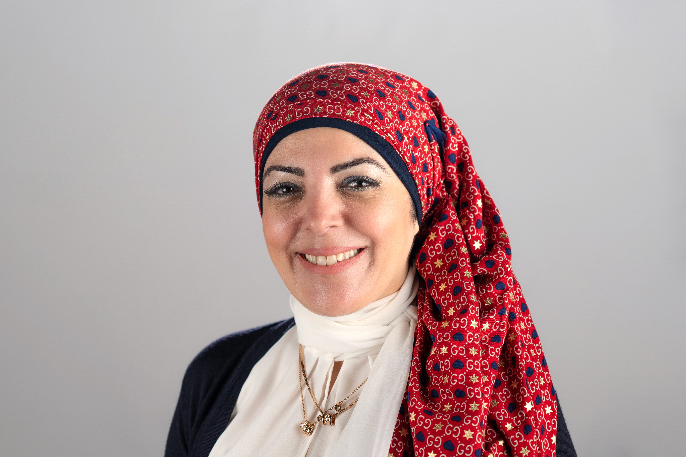
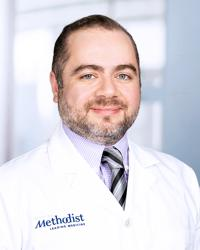
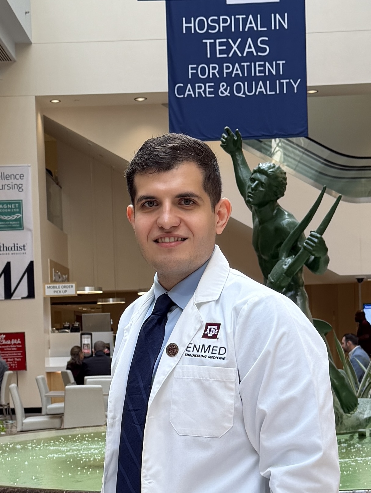

The organizing and scientific committees behind the NAAMA 48th National Medical Convention

Physician-scientist at the University of Texas Medical Branch (UTMB) specializing in cardiometabolic disease and Arab American health disparities. The driving force behind the 48th National Convention, Dr. Al-Lahham brings together clinical expertise and community commitment to advance health equity for Arab Americans.

Associate Professor and Jerold B. Katz Endowed Investigator at Houston Methodist DeBakey Heart and Vascular Center. Fellowship-trained preventive cardiologist with over 200 peer-reviewed publications on cardiometabolic disease and cardiovascular risk disparities.
NAAMA President-Elect and Associate Professor of Psychiatry at Baylor College of Medicine. A specialist in emergency psychiatry and psychosis, Dr. Moukaddam brings national leadership experience and deep roots in the Arab American medical community to the convention's organizing efforts.
Professor of Psychiatry at Baylor College of Medicine and Texas Children's Hospital, and a leading expert in child and adolescent psychopharmacology. His research on pediatric mental health and pharmacogenomics informs the convention's focus on Arab American youth wellbeing.

A dedicated member of the organizing team contributing to the planning and coordination of the 48th National Convention. His commitment to Arab American health advocacy and community engagement helps bring this convention to life.
Leading the scientific program with expertise spanning preventive cardiology, cardiometabolic disease, and cardiovascular disparities. He oversees speaker selection, abstract review, and session design to ensure a rigorous, high-impact scientific program.
Orthopedic surgeon at the University of Texas Medical Branch (UTMB) specializing in fracture care and trauma surgery. His clinical and research expertise adds a surgical perspective to the convention's breadth of clinical topics and abstract review process.
Faculty at Harvard Medical School and an internationally recognized leader in emergency and disaster nursing. A Fellow of both the American Academy of Nursing and the American Academy of Emergency Nursing, her expertise in global health emergencies and Arab American communities informs the convention's interdisciplinary approach.
Pharmacist and healthcare professional contributing her expertise in clinical pharmacy and medication management to the scientific committee's review and program development efforts.
Houston-based periodontist and organizer of the convention's Dental Track — a dedicated concurrent program bringing oral health into the Arab American health conversation. Dr. Abdeen's leadership expands the convention's scope beyond medicine to encompass comprehensive community health.
Child and Adolescent Psychiatry Fellow at Yale University and an active member of the NAAMA North Texas chapter. Her expertise in pediatric mental health and her engagement with the next generation of Arab American clinicians enriches both the scientific program and NAAMA's future leadership pipeline.